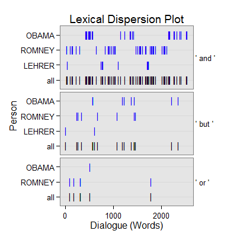

dc_connective(text.var, grouping.var, n.before = 1, tot = FALSE, n.after = n.before, ord.inds = TRUE, markup = c("<<", ">>"), name = "connective", ...)dc_connective_sub(text.var, grouping.var, n.before = 1, tot = FALSE, n.after = n.before, ord.inds = TRUE, markup = c("<<", ">>"), name = "connective_sub", ...)
TRUE condenses sub-units (e.g., sentences)
into turns of talk for that grouping.var.TRUE inds is ordered least to greatest.c("", "") to not mark the connective discourse
markers.termco.dc_connective - Returns returns a list of 2:
countsA termco object of connective discourse connector counts.
connectiveA trans_context object of connective discourse connectors in context.
dc_connective_sub - Returns returns a list of 4:
countsA termco object of connective discourse connector counts.
andA trans_context object of "and" discourse connectors in context.
butA trans_context object of "but" discourse connectors in context.
orA trans_context object of "or" discourse connectors in context.
dc_connective - Extract connective discourse connectors (i.e., "and",
"but", & "or" collectively termed discourse connectives (Schiffrin, 1987)) in
context.
dc_connective_sub - Extract connective discourse connectors ("and",
"but", & "or") in context.
Schiffrin, D. (1987). Discourse markers. (pp. 128-190). London: Cambridge University Press.
out <- with(pres_debates2012[1:200, ], dc_connective(dialogue, person)) out[1]$counts person word.count connectives 1 OBAMA 943 34(3.61%) 2 ROMNEY 1349 46(3.41%) 3 LEHRER 316 11(3.48%)out[2]$connective =================================== Event 1: [lines 1-3] LEHRER: We'll talk about specifically about health care in a moment. ** LEHRER: <<But>> what do you support the voucher system, Governor? ROMNEY: What I support is no change for current retirees and near retirees to Medicare. =================================== Event 2: [lines 2-4] LEHRER: But what do you support the voucher system, Governor? ** ROMNEY: What I support is no change for current retirees <<and>> near retirees to Medicare. ROMNEY: And the president supports taking dollar seven hundred sixteen billion out of that program. =================================== Event 3: [lines 3-5] ROMNEY: What I support is no change for current retirees and near retirees to Medicare. ** ROMNEY: <<And>> the president supports taking dollar seven hundred sixteen billion out of that program. LEHRER: And what about the vouchers? =================================== Event 4: [lines 4-6] ROMNEY: And the president supports taking dollar seven hundred sixteen billion out of that program. ** LEHRER: <<And>> what about the vouchers? ROMNEY: So that's that's number one. =================================== Event 5: [lines 6-8] ROMNEY: So that's that's number one. ** ROMNEY: Number two is for people coming along that are young, what I do to make sure that we can keep Medicare in place for them is to allow them either to choose the current Medicare program <<or>> a private plan. ROMNEY: Their choice. =================================== Event 6: [lines 8-10] ROMNEY: Their choice. ** ROMNEY: They get to choose <<and>> they'll have at least two plans that will be entirely at no cost to them. ROMNEY: So they don't have to pay additional money, no additional dollar six thousand. =================================== Event 7: [lines 12-14] ROMNEY: They'll have at least two plans. ** ROMNEY: <<And>> by the way, if the government can be as efficient as the private sector <<and>> offer premiums that are as low as the private sector, people will be happy to get traditional Medicare <<or>> they'll be able to get a private plan. ROMNEY: I know my own view is I'd rather have a private plan. =================================== Event 8: [lines 16-18] ROMNEY: I'd rather be able to have an insurance company. ** ROMNEY: If I don't like them, I can get rid of them <<and>> find a different insurance company. ROMNEY: But people make their own choice. =================================== Event 9: [lines 17-19] ROMNEY: If I don't like them, I can get rid of them and find a different insurance company. ** ROMNEY: <<But>> people make their own choice. ROMNEY: The other thing we have to do to save Medicare? =================================== Event 10: [lines 19-21] ROMNEY: The other thing we have to do to save Medicare? ** ROMNEY: We have to have the benefits high for those that are low income, <<but>> for higher income people, we're going to have to lower some of the benefits. ROMNEY: We have to make sure this program is there for the long term. =================================== Event 11: [lines 22-24] ROMNEY: That's the plan that I've put forward. ** ROMNEY: <<And>>, by the way the idea came not even from Paul Ryan <<or>> <<or>> Senator Wyden, who's the co author of the bill with with Paul Ryan in the Senate, <<but>> also it came from Bill Bill Clinton's chief of staff. ROMNEY: This is an idea that's been around a long time, which is saying, hey, let's see if we can't get competition into the Medicare world so that people can get the choice of different plans at lower cost, better quality. =================================== Event 12: [lines 26-28] OBAMA: Jim, if I if I can just respond very quickly, first of all, every study has shown that Medicare has lower administrative costs than private insurance does, which is why seniors are generally pretty happy with it. ** OBAMA: <<And>> private insurers have to make a profit. OBAMA: Nothing wrong with that. =================================== Event 13: [lines 29-31] OBAMA: That's what they do. ** OBAMA: <<And>> so you've got higher administrative costs, plus profit on top of that. OBAMA: And if you are going to save any money through what Governor Romney's proposing, what has to happen is, is that the money has to come from somewhere. =================================== Event 14: [lines 30-32] OBAMA: And so you've got higher administrative costs, plus profit on top of that. ** OBAMA: <<And>> if you are going to save any money through what Governor Romney's proposing, what has to happen is, is that the money has to come from somewhere. OBAMA: And when you move to a voucher system, you are putting seniors at the mercy of those insurance companies. =================================== Event 15: [lines 31-33] OBAMA: And if you are going to save any money through what Governor Romney's proposing, what has to happen is, is that the money has to come from somewhere. ** OBAMA: <<And>> when you move to a voucher system, you are putting seniors at the mercy of those insurance companies. OBAMA: And over time, if traditional Medicare has decayed or fallen apart, then they're stuck. =================================== Event 16: [lines 32-34] OBAMA: And when you move to a voucher system, you are putting seniors at the mercy of those insurance companies. ** OBAMA: <<And>> over time, if traditional Medicare has decayed <<or>> fallen apart, then they're stuck. OBAMA: And this is the reason why AARP has said that your plan would weaken Medicare substantially. =================================== Event 17: [lines 33-35] OBAMA: And over time, if traditional Medicare has decayed or fallen apart, then they're stuck. ** OBAMA: <<And>> this is the reason why AARP has said that your plan would weaken Medicare substantially. OBAMA: And that's why they were supportive of the approach that we took. =================================== Event 18: [lines 34-36] OBAMA: And this is the reason why AARP has said that your plan would weaken Medicare substantially. ** OBAMA: <<And>> that's why they were supportive of the approach that we took. OBAMA: One last point I want to make. =================================== Event 19: [lines 36-38] OBAMA: One last point I want to make. ** OBAMA: We do have to lower the cost of health care, not just in Medicare <<and>> Medicaid| LEHRER: Talk about that in a minute. =================================== Event 20: [lines 38-40] LEHRER: Talk about that in a minute. ** OBAMA: <<but>> <<but>> <<but>> overall. LEHRER: OK. =================================== Event 21: [lines 40-42] LEHRER: OK. ** OBAMA: <<And>> so| ROMNEY: That's that's a big topic. =================================== Event 22: [lines 46-48] OBAMA: I'm sorry. ** LEHRER: <<But>> all I want to do is go very quickly| ROMNEY: Let's get back to Medicare. =================================== Event 23: [lines 50-52] ROMNEY: Let's get back to Medicare. ** ROMNEY: The president said that the government can provide the service at lower cost <<and>> without a profit. LEHRER: All right. =================================== Event 24: [lines 54-56] LEHRER: Wait a minute, Governor. ** ROMNEY: <<But>> my experience my experience the private sector typically is able to provide a better product at a lower cost. LEHRER: All right. =================================== Event 25: [lines 64-66] LEHRER: Is there too much? ** LEHRER: <<And>> in your case, Mister President, is there should there be more? LEHRER: Beginning with you. =================================== Event 26: [lines 67-69] LEHRER: This is not a new two minute segment to start. ** LEHRER: <<And>> we'll go for a few minutes, <<and>> then we're going to go to health care, OK? ROMNEY: Regulation is essential. =================================== Event 27: [lines 72-74] ROMNEY: I needed them there. ** ROMNEY: You couldn't have people opening up banks in their in their garage <<and>> making loans. ROMNEY: I mean, you have to have regulations so that you can have an economy work. =================================== Event 28: [lines 81-83] ROMNEY: No, it can become out of date. ** ROMNEY: <<And>> what's happened with some of the legislation that's been passed during the president's term, you've seen regulation become excessive, <<and>> it's hurt it's hurt the economy. ROMNEY: Let me give you an example. =================================== Event 29: [lines 84-86] ROMNEY: Dodd Frank was passed. ** ROMNEY: <<And>> it includes within it a number of provisions that I think has some unintended consequences that are harmful to the economy. ROMNEY: One is it designates a number of banks as too big to fail, and they're effectively guaranteed by the federal government. =================================== Event 30: [lines 85-87] ROMNEY: And it includes within it a number of provisions that I think has some unintended consequences that are harmful to the economy. ** ROMNEY: One is it designates a number of banks as too big to fail, <<and>> they're effectively guaranteed by the federal government. ROMNEY: This is the biggest kiss that's been given to to New York banks I've ever seen. =================================== Event 31: [lines 88-90] ROMNEY: This is an enormous boon for them. ** ROMNEY: There've been one hundred twenty two community <<and>> small banks have closed since Dodd Frank. ROMNEY: So there's one example. =================================== Event 32: [lines 93-95] LEHRER: Do you want to repeal Dodd Frank? ** ROMNEY: Well, I would repeal <<and>> replace it. ROMNEY: We're not going to get rid of all regulation. =================================== Event 33: [lines 96-98] ROMNEY: You have to have regulation. ** ROMNEY: <<And>> there are some parts of Dodd Frank that make all the sense in the world. ROMNEY: You need transparency, you need to have leverage limits for| =================================== Event 34: [lines 99-101] LEHRER: Well, here's a specific| ** ROMNEY: <<But>> let's let's mention let me mention the other one. ROMNEY: Let's talk| =================================== Event 35: [lines 102-104] LEHRER: No, let's not. ** LEHRER: Let's let him respond let's let him respond to this specific on Dodd Frank <<and>> what the governor just said. OBAMA: I think this is a great example. =================================== Event 36: [lines 106-108] OBAMA: Now, it wasn't just on Wall Street. ** OBAMA: You had loan officers were that were giving loans <<and>> mortgages that really shouldn't have been given, because the folks didn't qualify. OBAMA: You had people who were borrowing money to buy a house that they couldn't afford. =================================== Event 37: [lines 109-111] OBAMA: You had credit agencies that were stamping these as Aone great investments when they weren't. ** OBAMA: <<But>> you also had banks making money hand over fist, churning out products that the bankers themselves didn't even understand, in order to make big profits, <<but>> knowing that it made the entire system vulnerable. OBAMA: So what did we do? =================================== Event 38: [lines 111-113] OBAMA: So what did we do? ** OBAMA: We stepped in <<and>> had the toughest reforms on Wall Street since the one thousand nine hundred thirtys. OBAMA: We said you've got banks, you've got to raise your capital requirements. =================================== Event 39: [lines 117-119] OBAMA: Now, Governor Romney has said he wants to repeal Dodd Frank. ** OBAMA: <<And>>, you know, I appreciate <<and>> it appears we've got some agreement that a marketplace to work has to have some regulation. OBAMA: But in the past, Governor Romney has said he just want to repeal Dodd Frank, roll it back. =================================== Event 40: [lines 118-120] OBAMA: And, you know, I appreciate and it appears we've got some agreement that a marketplace to work has to have some regulation. ** OBAMA: <<But>> in the past, Governor Romney has said he just want to repeal Dodd Frank, roll it back. OBAMA: And so the question is: Does anybody out there think that the big problem we had is that there was too much oversight and regulation of Wall Street? =================================== Event 41: [lines 119-121] OBAMA: But in the past, Governor Romney has said he just want to repeal Dodd Frank, roll it back. ** OBAMA: <<And>> so the question is: Does anybody out there think that the big problem we had is that there was too much oversight <<and>> regulation of Wall Street? OBAMA: Because if you do, then Governor Romney is your candidate. =================================== Event 42: [lines 121-123] OBAMA: Because if you do, then Governor Romney is your candidate. ** OBAMA: <<But>> that's not what I believe. ROMNEY: Sorry, but that's just not that's just not the facts. =================================== Event 43: [lines 122-124] OBAMA: But that's not what I believe. ** ROMNEY: Sorry, <<but>> that's just not that's just not the facts. ROMNEY: Look, we have to have regulation on Wall Street. =================================== Event 44: [lines 125-127] ROMNEY: That's why I'd have regulation. ** ROMNEY: <<But>> I wouldn't designate five banks as too big to fail <<and>> give them a blank check. ROMNEY: That's one of the unintended consequences of Dodd Frank. =================================== Event 45: [lines 128-130] ROMNEY: It wasn't thought through properly. ** ROMNEY: We need to get rid of that provision because it's killing regional <<and>> small banks. ROMNEY: They're getting hurt. =================================== Event 46: [lines 134-136] ROMNEY: It's one of the reasons for the great financial calamity we had. ** ROMNEY: <<And>> so Dodd Frank correctly says we need to have qualified mortgages, <<and>> if you give a mortgage that's not qualified, there are big penalties, except they didn't ever go on <<and>> define what a qualified mortgage was. ROMNEY: It's been two years. =================================== Event 47: [lines 138-140] ROMNEY: So banks are reluctant to make loans, mortgages. ** ROMNEY: Try <<and>> get a mortgage these days. ROMNEY: It's hurt the housing market because Dodd Frank didn't anticipate putting in place the kinds of regulations you have to have. =================================== Event 48: [lines 142-144] ROMNEY: Sometimes they didn't come out with a clear regulation. ** ROMNEY: I will make sure we don't hurt the functioning of our of our marketplace <<and>> our business, because I want to bring back housing <<and>> get good jobs. LEHRER: All right. =================================== Event 49: [lines 145-147] LEHRER: I think we have another clear difference between the two of you. ** LEHRER: Now, let's move to health care where I know there is a clear difference, <<and>> that has to do with the Affordable Care Act, Obamacare. LEHRER: And it's a two minute new new segment, and that means two minutes each. =================================== Event 50: [lines 146-148] LEHRER: Now, let's move to health care where I know there is a clear difference, and that has to do with the Affordable Care Act, Obamacare. ** LEHRER: <<And>> it's a two minute new new segment, <<and>> that means two minutes each. LEHRER: And you go first, Governor Romney. =================================== Event 51: [lines 147-149] LEHRER: And it's a two minute new new segment, and that means two minutes each. ** LEHRER: <<And>> you go first, Governor Romney. LEHRER: You want it repealed. =================================== Event 52: [lines 154-156] ROMNEY: You know, I was in New Hampshire. ** ROMNEY: A woman came to me <<and>> she said, look, I can't afford insurance for myself <<or>> my son. ROMNEY: I met a couple in Appleton, Wisconsin, and they said, we're thinking of dropping our insurance, we can't afford it. =================================== Event 53: [lines 155-157] ROMNEY: A woman came to me and she said, look, I can't afford insurance for myself or my son. ** ROMNEY: I met a couple in Appleton, Wisconsin, <<and>> they said, we're thinking of dropping our insurance, we can't afford it. ROMNEY: And the number of small businesses I've gone to that are saying they're dropping insurance because they can't afford it, the cost of health care is just prohibitive. =================================== Event 54: [lines 156-158] ROMNEY: I met a couple in Appleton, Wisconsin, and they said, we're thinking of dropping our insurance, we can't afford it. ** ROMNEY: <<And>> the number of small businesses I've gone to that are saying they're dropping insurance because they can't afford it, the cost of health care is just prohibitive. ROMNEY: And and we've got to deal with cost. =================================== Event 55: [lines 157-159] ROMNEY: And the number of small businesses I've gone to that are saying they're dropping insurance because they can't afford it, the cost of health care is just prohibitive. ** ROMNEY: <<And>> <<and>> we've got to deal with cost. ROMNEY: And, unfortunately, when when when you look at Obamacare, the Congressional Budget Office has said it will cost dollar two thousand five hundred a year more than traditional insurance. =================================== Event 56: [lines 158-160] ROMNEY: And and we've got to deal with cost. ** ROMNEY: <<And>>, unfortunately, when when when you look at Obamacare, the Congressional Budget Office has said it will cost dollar two thousand five hundred a year more than traditional insurance. ROMNEY: So it's adding to cost. =================================== Event 57: [lines 160-162] ROMNEY: So it's adding to cost. ** ROMNEY: <<And>> as a matter of fact, when the president ran for office, he said that, by this year, he would have brought down the cost of insurance for each family by dollar two thousand five hundred a family. ROMNEY: Instead, it's gone up by that amount. =================================== Event 58: [lines 170-172] ROMNEY: Fourth, there was a survey done of small businesses across the country, said, what's been the effect of Obamacare on your hiring plans? ** ROMNEY: <<And>> three quarters of them said it makes us less likely to hire people. ROMNEY: I just don't know how the president could have come into office, facing twenty three million people out of work, rising unemployment, an economic crisis at the at the kitchen table, and spend his energy and passion for two years fighting for Obamacare instead of fighting for jobs for the American people. =================================== Event 59: [lines 171-173] ROMNEY: And three quarters of them said it makes us less likely to hire people. ** ROMNEY: I just don't know how the president could have come into office, facing twenty three million people out of work, rising unemployment, an economic crisis at the at the kitchen table, <<and>> spend his energy <<and>> passion for two years fighting for Obamacare instead of fighting for jobs for the American people. ROMNEY: It has killed jobs. =================================== Event 60: [lines 173-175] ROMNEY: It has killed jobs. ** ROMNEY: <<And>> the best course for health care is to do what we did in my state: craft a plan at the state level that fits the needs of the state. ROMNEY: And then let's focus on getting the costs down for people, rather than raising it with the dollar two thousand five hundred additional premium. =================================== Event 61: [lines 174-176] ROMNEY: And the best course for health care is to do what we did in my state: craft a plan at the state level that fits the needs of the state. ** ROMNEY: <<And>> then let's focus on getting the costs down for people, rather than raising it with the dollar two thousand five hundred additional premium. LEHRER: Mister President, the argument against repeal? =================================== Event 62: [lines 176-178] LEHRER: Mister President, the argument against repeal? ** OBAMA: Well, four years ago, when I was running for office, I was traveling around <<and>> having those same conversations that Governor Romney talks about. OBAMA: And it wasn't just that small businesses were seeing costs skyrocket and they couldn't get affordable coverage even if they wanted to provide it to their employees. =================================== Event 63: [lines 177-179] OBAMA: Well, four years ago, when I was running for office, I was traveling around and having those same conversations that Governor Romney talks about. ** OBAMA: <<And>> it wasn't just that small businesses were seeing costs skyrocket <<and>> they couldn't get affordable coverage even if they wanted to provide it to their employees. OBAMA: It wasn't just that this was the biggest driver of our federal deficit, our overall health care costs, but it was families who were worried about going bankrupt if they got sick, millions of families, all across the country. =================================== Event 64: [lines 178-180] OBAMA: And it wasn't just that small businesses were seeing costs skyrocket and they couldn't get affordable coverage even if they wanted to provide it to their employees. ** OBAMA: It wasn't just that this was the biggest driver of our federal deficit, our overall health care costs, <<but>> it was families who were worried about going bankrupt if they got sick, millions of families, all across the country. OBAMA: If they had a pre existing condition, they might not be able to get coverage at all. =================================== Event 65: [lines 181-183] OBAMA: If they did have coverage, insurance companies might impose an arbitrary limit. ** OBAMA: <<And>> so as a consequence, they're paying their premiums, somebody gets really sick, lo <<and>> behold, they don't have enough money to pay the bills, because the insurance companies say that they've hit the limit. OBAMA: So we did work on this, alongside working on jobs, because this is part of making sure that middle class families are secure in this country. =================================== Event 66: [lines 183-185] OBAMA: So we did work on this, alongside working on jobs, because this is part of making sure that middle class families are secure in this country. ** OBAMA: <<And>> let me tell you exactly what Obamacare did. OBAMA: Number one, if you've got health insurance, it doesn't mean a government takeover. =================================== Event 67: [lines 187-189] OBAMA: You keep your own doctor. ** OBAMA: <<But>> it does say insurance companies can't jerk you around. OBAMA: They can't impose arbitrary lifetime limits. =================================== Event 68: [lines 190-192] OBAMA: They have to let you keep your kid on their insurance your insurance plan until you're twenty six years old. ** OBAMA: <<And>> it also says that you're going to have to get rebates if insurance companies are spending more on administrative costs <<and>> profits than they are on actual care. OBAMA: Number two, if you don't have health insurance, we're essentially setting up a group plan that allows you to benefit from group rates that are typically eighteen percent lower than if you're out there trying to get insurance on the individual market. =================================== Event 69: [lines 194-196] LEHRER: Two minutes two minutes is up, sir. ** OBAMA: No, I think I had five seconds before you interrupted me, was the irony is that we've seen this model work really well in Massachusetts, because Governor Romney did a good thing, working with Democrats in the state to set up what is essentially the identical model <<and>> as a consequence people are covered there. OBAMA: It hasn't destroyed jobs. =================================== Event 70: [lines 196-198] OBAMA: It hasn't destroyed jobs. ** OBAMA: <<And>> as a consequence, we now have a system in which we have the opportunity to start bringing down costs, as opposed to just leaving millions of people out in the cold. LEHRER: Your five seconds went away a long time ago.plot(out)
## Save externally use .doc or .txt ## print(out[[2]], file="connective_causality.doc")